2027 — год превращения агентов из «чата рядом с продуктом» в основной способ взаимодействия с 2ГИС. В 2026 запущено ядро: Discovery-агент, собственные компоненты чата, первые механики монетизации. В 2027 поверх ядра собирается семейство агентов, слой памяти и транзакций и единая точка входа.
Четыре агента уже в продукте — Recovery, Booking, Товарный, Discovery. Ещё два — транспортный и Social Agent — в проработке на 2027. Каждый решает свою задачу, от вопроса о месте до записи и покупки, а для пользователя это один помощник.
Отвечает на вопросы о конкретном месте · запуск декабрь 2025
Записывает на услуги прямо в чате · запуск июнь 2026
Помогает выбрать не магазин, а товар · запуск июль 2026
Подсказывает, куда пойти в городе · запуск июль 2026
Направление «Сопровождение»: агенты внутри существующих сценариев 2ГИС — навигации, личных и групповых чатов, публичных событий. В Q1 2027 — продуктовая проработка и технические прототипы, запуск по роадмапу — Q2–Q4 2027.
Связывает навигацию с поиском мест и другими действиями · закрывает задачу «добраться»
Помогает договариваться в личных и групповых чатах, разбираться в происходящем в публичных
Рамка — концепт «Городской ИИ-помощник 2ГИС». Ассистент понимает потребность и контекст пользователя в городе, объединяет поиск, маршруты, рекомендации и действия в один сценарий и сопровождает от формирования потребности до выполнения задачи.
Каждая точка входа и каждый ответ привязаны к конкретной задаче и следующему шагу: понять → выбрать → сделать.
Одно поле для текста и голоса принимает любую задачу — помощник сам определяет сценарий: поиск, маршрут, бронирование или рекомендации.
Пользователь не «переходит в AI» — агент работает там, где уже есть намерение: поверх карты, поиска, маршрута, карточки. Бесшовные переходы без потери контекста.
Каждый закрывает свой этап lifecycle: потребность → поиск и выбор → бронь и оплата → маршрут → сопровождение → лояльность. Для пользователя это один помощник; склейку делает оркестратор.
Локальное дискавери — картой, широкое — списком с картой, справка — текстом, сложный маршрут — транспортной выдачей, «поехали домой» — сразу в навигаторе. Чат объясняет выдачу: просят «с хорошими отзывами» — показываем отзывы и аргументируем выбор.
Точность данных — основа бренда 2ГИС; AI — интерфейс к знаниям о городе, а не их замена. Проверенные данные отличают ответ 2ГИС от универсальной LLM. Ошибка в гео-контексте разрушает доверие быстрее, чем любая фича его создаёт.
Сперва локация, время, сценарий и маршрут; затем предпочтения, история и социальный круг — там, где это даёт пользу и приемлемо по приватности. Проактивность уместная, не навязчивая.
Органические вопросы, реакции и действия после ответа улучшают качество ответов, саджесты, ранжирование и сами данные карточек.
Механики, события и UX-паттерны переиспользуются между агентами: общие контракты, общий подход к метрикам, масштабирование на новые сценарии и поверхности.
Одиннадцать сценариев по этапам жизненного цикла задачи в городе — плюс проактивность и сторона бизнеса. У каждого справа — как он закрыт сегодня: решается без агентов существующим продуктом, частично работает через запущенных агентов или никак не решается. Сверху — сквозной способ входа, который объединяет всё.
Почему через AI. Задача формулируется словами и контекстом, а не фильтрами. Агент понимает намерение и отвечает подбором с аргументами, а не списком рубрик.
Почему через AI. Карточка статична, а вопросы конкретные и редкие. Агент собирает ответ из отзывов, сайта, фото и внутренних данных и предлагает следующий шаг. Цель — ответ виден прямо в карточке, без перехода в чат.
Почему через AI. Каталог ведёт в магазин, а человеку нужен товар: категория, бюджет, характеристики. Агент уточняет запрос, показывает предложения магазинов рядом и ведёт к действию — сайт, маркетплейс или маршрут в магазин.
Почему через AI. У большинства бизнесов нет онлайн-записи: в красоте API есть у 30% салонов, телефон у 94%. Агент сам выбирает способ — API, сайт или звонок — и доводит до подтверждённой записи и оплаты в чате.
Почему через AI. Выбор способа с учётом пробок и цены, маршруты с остановками и смена плана на ходу — это диалог, а не форма. За рулём текст недоступен, поэтому голос здесь условие сценария.
Почему через AI. План — это несколько мест, время, маршрут и бюджет. Сегодня это склейка из пяти приложений. Агент собирает план целиком, подкручивает по пожеланиям и сохраняет, чтобы к нему вернуться.
Боль. Компания договаривается в чате, а бронирует кто-то один: остальные не видят время и адрес, переспрашивают, пересылают скриншоты; при смене планов нужно предупреждать каждого.
Почему через AI. Агент собирает голоса в чате, бронирует на всех и делится бронью с каждым: у всех своя копия с адресом, временем и маршрутом, изменения синхронизируются.
Почему через AI. Справочный вопрос требует не списка организаций, а пошагового ответа с привязкой к месту: куда идти, что взять, как записаться.
Почему через AI. Сегодня 2ГИС открывают под задачу и закрывают. Помощник, у которого хранятся планы, записи, брони и билеты, который помнит историю и знает круг, становится поводом открывать приложение каждый день — без нового поиска.
Почему через AI. Сегодня каждый сценарий начинается с запроса. Агент знает контекст — маршрут, время, историю записей и планы — и может предложить следующий шаг до того, как человек его сформулировал. Граница между полезным и навязчивым задаётся данными и обратной связью.
Почему через AI. Треть платной базы общается с агентом, но бизнес этого не видит: в ЛК есть клики и звонки, а вопросов и записей из чата нет. Агент становится каналом живого спроса: компания видит обращения и записи, подключает онлайн-запись без своей витрины и управляет слотами. Без этого нет аргумента для рекламодателя и данных для монетизации.
Набор и приоритеты сценариев — синтез из стратегии, плана Q1 и презентации; сверить с командой.
Все инициативы трека работают на одну цель — DAU AI-агентов больше 1 млн. Рост даёт не только запуск новых агентов, но и глубина: транзакции и способ взаимодействия.
Discovery выходит на iOS/Android на собственных компонентах чата; стартуют copilot-сценарии, слой памяти и совместные сценарии.
Транспортный агент, агент сопровождения, оплата в чате, единая точка входа — оркестратор поверх агентов.
Брони и билеты через партнёров, хранение внешних броней, персонализация, голосовой режим, выход агента в чаты пользователей.
Новые агенты расширяют охват сценариев. Транзакции (запись, бронь, оплата) и способ взаимодействия (copilot, собственный чат, голос) конвертируют охват в привычку и возвращаемость.
NSM направления — DAU AI-агентов больше 1 млн. В Recovery и Discovery растим MAU: на него влияем напрямую, из него складывается DAU. В Booking — записи в день и конверсию: через повторные записи они дают возвраты в 2ГИС. Два новых агента — транспортный и Social Agent — в Q1 прорабатываем и прототипируем без пользовательских запусков.
Массовость — следствие, а не ценность: через Recovery идёт верх воронки и чужие интенты (товарных 1,5–3% сообщений, услуговых 4,1%). Верх воронки со временем уйдёт к единой точке входа, знание о месте останется за Recovery.
Вход в отзывах — ответ прямо в блоке без ухода в чат: агентское саммари заменяет офлайн-пайплайн «Люди говорят». Дальше тот же приём на описании места.
Сегодня веб-поиск даёт 60 тыс. запросов в сутки и в 6 случаях из 10 не находит ответа.
Цикл на крупнейших наборах рубрик и интентов. Приоритет по дизлайкам — ответы «данных нет», отказы, гео-объекты.
Усиливаем и делаем видимым для рекламодателя. Внутренний эффект: агентское саммари снимает стоимость офлайн-генерации — около 6,2 млн ₽ на пул плюс перегенерации.
Миграция с дизайн-системы V1 обязательна — поддержку прекратили. Осваиваем то, что даёт Сбер, и держим позицию по контуру ЦА.
Рычаги по порядку: раскатка (100% в Онлайне и релиз на платформах) → входы (у Discovery нет карточки-контейнера: дашборд, нулевая выдача, дальше единая точка входа) → конверсия входа в диалог → возвращаемость («куда сходить» повторяется регулярно, есть шанс на привычку).
Без этого остальное не считается — главный вклад в аудиторию года.
Условие релиза на платформах и свой трек: виджеты, кнопки действий, места на карте, возврат в диалог без потери контекста.
Витрина мест, рычаги настройки подборки или карта тем. Решение опирается на октябрьское исследование и задаёт метрику успешной сессии.
Внутренняя база знаний: для чего место подходит, чем отличается, кому. Собирается из отзывов, фото, меню и витрин, а не веб-поиском в момент запроса. Гид — источник подборок, Афиша — событий, Recovery — факты о месте.
Где человек, когда спрашивает, какая погода, что уже смотрел в сессии. Сначала контекст, профиль позже.
Цикл на живом трафике. Реклама в выдаче как новая позиция и замер каннибализации: диалог вместо поисковой выдачи — потерянный рекламный показ, считаем нетто, holdout уже стоит.
| Метрика | Сейчас | Цель Q1 2027 | Цель 2027 |
|---|---|---|---|
| Покрытие агентом компаний в красоте | 30% | 42–45% уточнить | 70% |
| Конверсия внутри агента в успешную запись | 10% | 12% только API | 15% |
| CTR точек входа у не-рекламодателей | 5% | 7% пока без деления РД / неРД | 10% |
| Записей в день | 500 сейчас 150, цель декабря | 650+ | 1 250+ |
| Компании видят записи из 2ГИС в ЛК | нет | да | инструменты управления в ЛК, переток неРД → РД |
Названия колонок «Сейчас / Цель Q1 / Цель 2027» — моя интерпретация трёх столбцов из исходной таблицы, сверить.
В красоте онлайн-запись есть у 42% компаний, сайт — у 59%, телефон — у 94%. Агент становится оркестратором инструментов API → сайт → звонок: выбирает способ по доступности и цене, ведёт единый статус «ждём подтверждения / подтверждено» и очередь асинхронных заявок. Метрики: доля карточек с рабочим способом записи; по каждому инструменту — доля сессий и конверсия; прирост покрытия в п.п.
CTR 5% → 7%: показываем агента на YC-компаниях, где запись есть, а агента нет (22 тыс. → 28 тыс., около +30%), и пускаем без авторизации — для API-интеграций контакты подтверждаются по SMS. Конверсия 10% → 12%: раздел «Бронирования» со статусом, отменой и повторной записью, пуш за 2 часа до визита.
Рекламодатель видит в ЛК клики и звонки, но не записи из 2ГИС. Первый шаг к модели монетизации — счётчик бронирований, конверсия в бронь из агента, список и детали броней в ЛК партнёра. Метрика: число компаний с ≥ 5 записями из 2ГИС в месяц, далее их конверсия в рекламодателей.
TTS для навигационных подсказок: качество и задержки синтеза, быстрое подключение новых голосов (в том числе знаменитостей), архитектура озвучивания.
Голосовой диалог с учётом местоположения, маршрута и дорожной ситуации, включая ответы через других агентов.
Передача намерения, контекста и задачи из агента в Discovery, Booking и другие агенты с возвратом результата; полный цикл на базовом техническом прототипе.
Агент-фасилитатор: подключение к чату, учёт пожеланий участников, помощь с выбором, передача согласованной задачи другим агентам; отдельно — ненавязчивая проактивность.
Совместно с «Пульсом»: контекстные саммари событий и ответы на вопросы в чате с учётом типа события, актуальности и достоверности информации.
Передача согласованной в чате задачи в Discovery, Booking и другие агенты с возвратом результата в диалог.
Сроки инициатив в исходном плане не проставлены (ДД.ММ). Статусы: «Нужен бриф» — бриф ещё не написан, «Бриф Q4, продолжаем» — инициатива идёт с Q4 2026.
Концепт-кадры из презентации «ИИ-помощник в 2ГИС» (август 2026). Кликните, чтобы увеличить.
Пользователь вводит намерение, а не каталожный запрос.
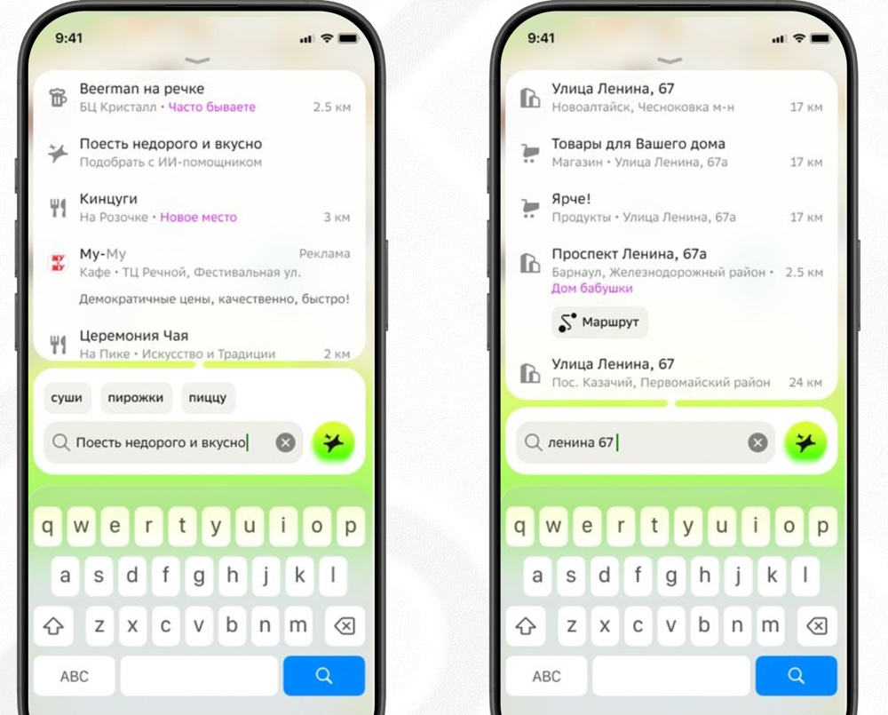
Сложный запрос понятным языком · роутинг исходя из запроса
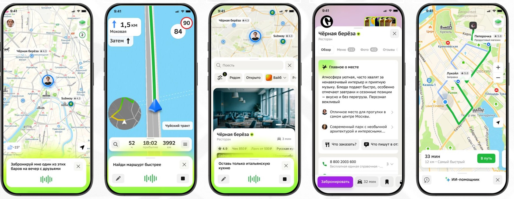
Один диалог — планы на всех. Агент в переписках пользователей, включая групповые чаты.
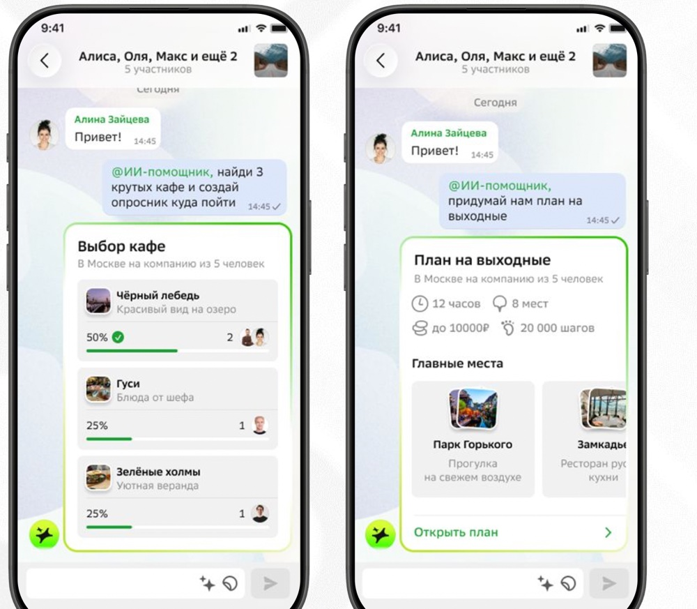
Опросник в чате · готовый план на выходные для группы
Строит сложный маршрут с остановками и сопровождает в пути.
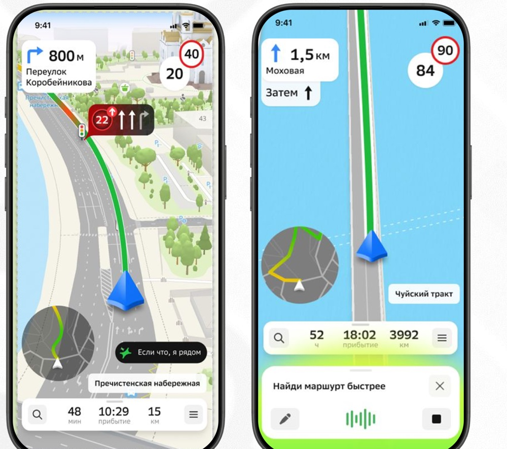
Подсказки прямо в поездке · сопровождение в дороге
Под каждым треком — инициативы с типом (Run / Grow / Transform) и сроками. Расхождения между сроками трека и инициативы в списке помечены. Интеграция Sber SDK ЦА идёт отдельным регуляторным треком.
База — диалоговый поиск мест по намерению, ядро задачи find — запущена в 2026. Трек углубляет ответ агента.
Закрывает задачу «добраться» в чате. Выбор способа и сложная маршрутизация — два независимых блока, отсюда объём.
Справочные и сопровождающие сценарии — info. Каждый класс навыков — отдельный источник данных; набираются постепенно.
Новый канал присутствия: агент работает внутри переписки пользователей, включая групповые чаты.
Как помощник собран и как через него проходит запрос — реализация концепта «Продукт — ИИ-помощник».
Единое хранение созданного и забронированного — слой памяти с общим профилем поверх всех агентов: вернуться, повторить, отменить.
Довести от выбора до брони и оплаты — замыкание цикла «поиск → выбор → оплата». Первый этап брони — выход из чата на форму покупки.
Формирование и объяснение выдачи под человека и его круг: «были друзья», «подходит вам». В списке инициатив — Q1 → Q4 2027.
Чат — первая новая модальность, голос — следующий и более важный шаг: самый естественный способ обратиться к помощнику там, где текст недоступен — за рулём, на ходу, hands-free.
Как агенты приносят выручку и как измеряется их влияние. В списке инициатив — до Q4 2027, в треках — до Q2 — сверить. Открытый вопрос — передача рекламной части в трек рекламы.
Внедрение и развитие Sber SDK ЦА: подключение агентов к интеграции, виджеты, интеграция механик, передача потребностей Сберу. Сквозная работа на весь горизонт — параллельный канал, пока часть функций живёт на стороне Сбера. ДоД инициативы требует уточнения. Подробнее — в разделе про ЦА.
Транзакционные цепочки замыкаются на партнёров; LLM-инфраструктура — мульти-модельная, без моновендорной зависимости.
Внутри 2ГИС агенты работают нативно на собственной платформе — полный контроль UX и качества, copilot целиком. В экосистеме Сбера — формализованные контракты: 2ГИС отдаёт API и промпты, чтобы карты, поиск мест и навигация были доступны в поверхностях Сбера и ДЗО.
| 2026 | Q1 | Q2 | Q3 | Q4 |
|---|---|---|---|---|
| Цель | 0,5 | 1,5 | 3 | 5 |
| Факт с ЦА | 0,07 | 1,0 | 1,6 | – |
| Факт без ЦА* | 2,5 | 3,0 | 4,3 | – |
* Аудитория ИИ-ассистента в целом; включает тираж на ЦА.
Только полный экран или закрыт. Нет шторки, бабла или панели рядом с контентом.
Ответ остаётся в окне: точки на карту, в выдачу и в навигатор агент не выводит; вне чата агента нет.
Открыл карточку из чата — он закрылся. Цепочка поиск → выбор → бронь распадается на отдельные сессии.
UI 2ГИС рендерится через нестандартный Qt/OpenGL, чужой View может быть только поверх. Оптимальное решение — back-to-back интеграция без front-части (пример — ЕЛК). Для iOS решения есть, но экспериментальные: снимают часть ограничений и заметно удорожают разработку.
Использование SDK — риск для целевого UX. End-to-end сценарии — ядро стратегии 2027 (бронирование и оплата, сопровождение, память) — реализуемы только на собственной платформе помощника; через ЦА они не собираются в принципе. Держим на общем контроле и своевременно принимаем решение, если ограничения не будут решены. До конца 2026 UX реализуем без ЦА — согласовано.
Полугодовая выгрузка цифрового ассистента СБОЛ, январь–июль 2026. Подтвердился тезис: 99,9% интентов на поверхности касаются продукта, в котором находится пользователь. Спрос на дискавери, отели и товары — нулевой.
| Сообщений в выгрузке | 8,7 млн |
| Прямой спрос на сценарии 2ГИС (банкомат рядом, режим работы, как добраться) | ~3–3,5 тыс./мес |
| Потолок со всеми гибридами и саджестами | ~25 тыс./мес · ~1,7% |
| Прирост к аудитории Recovery в оптимистичном сценарии | < 1% |
Интеграция в поверхности Сбера — не канал роста аудитории, а регуляторное обязательство и часть единой стратегии. Ресурс на неё планируем соответственно.
«Подбери варианты квартир в районе Северного речного вокзала». Ожидаемый результат — не только объекты, но и школы и сады, МФЦ и поликлиники, парки, транспорт, досуг рядом. Запрос требует данных двух ДЗО, но ЦА передаёт интент только одному агенту.
Ограничение архитектуры: 1 интент → 1 агент, совместная оркестрация не предусмотрена. Сегодня обогащение гео-контекстом возможно только через прямую интеграцию Домклик — 2ГИС.
| Зависимость | Владелец / статус | Последствия отсутствия решения |
|---|---|---|
| Разные варианты встраивания ассистента в ЦА SDK | P0 · 2ГИСбудет в Q3 | Требования и mockups отправлены ранее. Согласовано: до конца 2026 реализуем UX без ЦА. |
| Поддержка Qt на Android для вариантов встраивания | P0 · 2ГИСс риском в Q3 | 2ГИС для Android собран на Qt — переиспользовать UI-компоненты в целевом UX ассистента невозможно. |
| Передача контекста ЦА ↔ Отелло/2ГИС в обе стороны | P0 · 2ГИС и Отеллобудет в Q3 | Критерии поиска из диалога → список с преднастроенными фильтрами, и обратно: фильтры из интерфейса → ассистент. |
| SLA времени ответа ЦА | P0 · 2ГИС и Отеллождём ETA | Гарантия и процесс обнаружения outage, real-time прозрачность для ДЗО о проблемах с ЦА. |
| Двустороннее взаимодействие ассистента и поверхности ДЗО | P0 · 2ГИС и Отеллобудет в Q3 | Тап по карте → ассистент с информацией по локации; просьба построить маршрут → ассистент сворачивается, карта показывает маршрут. |
| Оттестированный билд CrossHub, спеки деплоя и диаграммы | P0 · Отеллоdone | Без билдов заблокирован переход с ШЭС на CrossHub в Q3. CrossHub сделан для Звука и требует доработки под стек Отелло / 2ГИС. |
| ЦА хранит историю диалога (авторизованная зона) | P0 · Отеллоплатформа done · SDK 10.09 | SDK обнуляет сессию при каждом закрытии чата. Для неавторизованных (85–90% аудитории) не поддерживается. |
| Оценка ответа ЦА пользователем | P0 · Отеллобудет в Q3 | Без оценки — деградация и слепота по качеству ответов. Телеметрия доступна сотрудникам Отелло напрямую. |
| Описание процесса ИФТ/ПСИ/ПРОМ с учётом Сова и CrossHub | P1 · Отеллождём ETA | Нельзя планировать работы без этапов процесса и требований для инфраструктуры и ИБ на стороне 2ГИС. |
| Голосовая модальность | P1 · 2ГИСпилот Q3 в СБОЛ · Q4 | Нужна для навигации за рулём и на ходу: «заехать на ближайшую заправку». |
| Сбор и передача аналитических данных | P1 · 2ГИС и Отеллождём ETA | Задекларированы ручные выгрузки, автоматизация поставки аналитики не определена. |
| SLA решения багов в SDK и ЦА | P1 · 2ГИС и Отеллождём ETA | Нет предсказуемого процесса — невозможно обеспечить собственные SLA по критичным багам и фичам. |
| Процесс и требования на релизы агента с ЦА | P1 · 2ГИС и Отеллождём ETA | Непонятно, когда нужен полный цикл тестирования, а когда релизы независимы от ЦА — риск багов в проде. |
| Прозрачность архитектуры АВЧ и CrossHub: гарантия попадания гео-запроса в агенты 2ГИС | P1 · 2ГИС и Отеллоdone | Задекларировано: запросы от 2ГИС идут напрямую в 2ГИС-агентов. Без описания маршрутизации — риск некорректных ответов. |
Copilot нереализуем на SDK ЦА: WebView-фрейм, потеря контекста при переходах; на Android — несовместимость с Qt/QML-стеком. Пока собственные компоненты не доехали, релиз Discovery заблокирован.
В Q1 стартуют восемь инициатив разом, пик — Q2 (13 в работе), Q3 — 12. Одновременно идут длинные треки: платформа, транспорт, сопровождение, бронирование и оплата.
Галлюцинации моделей против точности данных — основы бренда; неконтролируемая маршрутизация АВЧ Сбера.
Каждый оператор брони и каждый источник броней — отдельная интеграция со своей моделью данных. Скорость роста покрытия зависит от подключения партнёров.
Единая точка входа собирается последней и зависит от готовности всех агентов; ошибка роутинга намерений обесценивает отдельных агентов. Риск каскадных задержек.
Агент сопровождения — множество несвязанных источников данных: госорганизации, страховки, налоги. Навыки набираются постепенно, быстрого эффекта не будет.
Без трекинга ЦД, holdout и A/B рост использования не конвертируется в аргументы для бизнеса и рекламодателей.
Одна строка на стартовом экране 2ГИС принимает любой запрос — словами или голосом. Помощник понимает намерение и отвечает в подходящем формате: чат, карта, список, навигатор. Без склейки из пяти приложений.
2ГИС закрепляется как end-to-end помощник городской жизни: от ответа к действию, от каталога к диалогу.
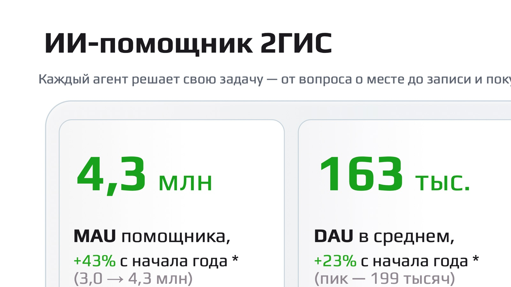
3 · Статус помощника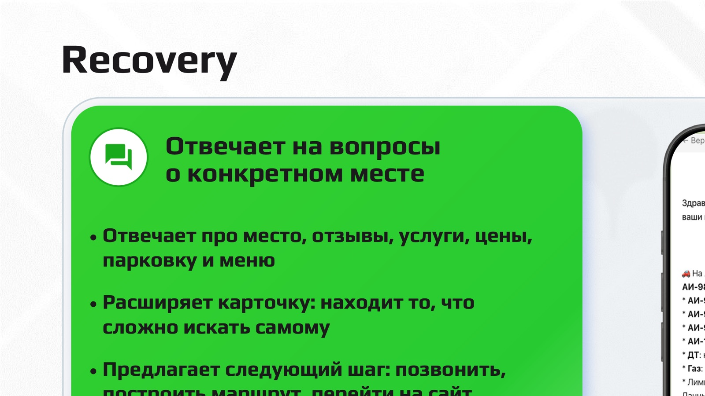
4 · Recovery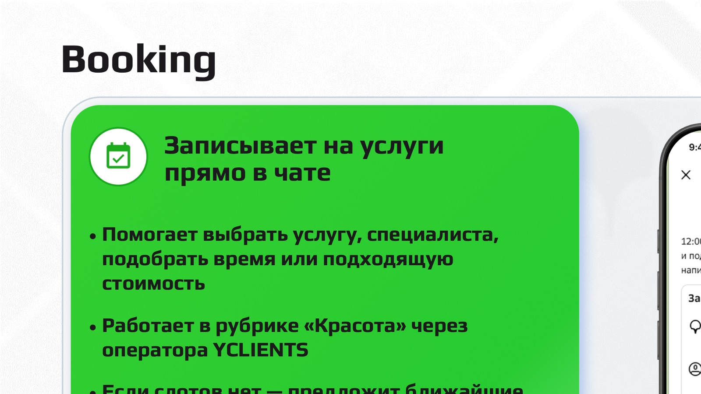
5 · Booking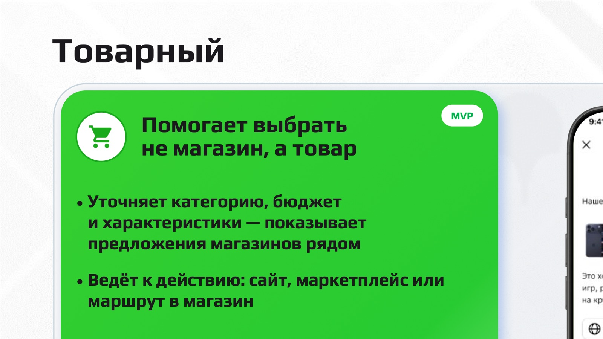
6 · Товарный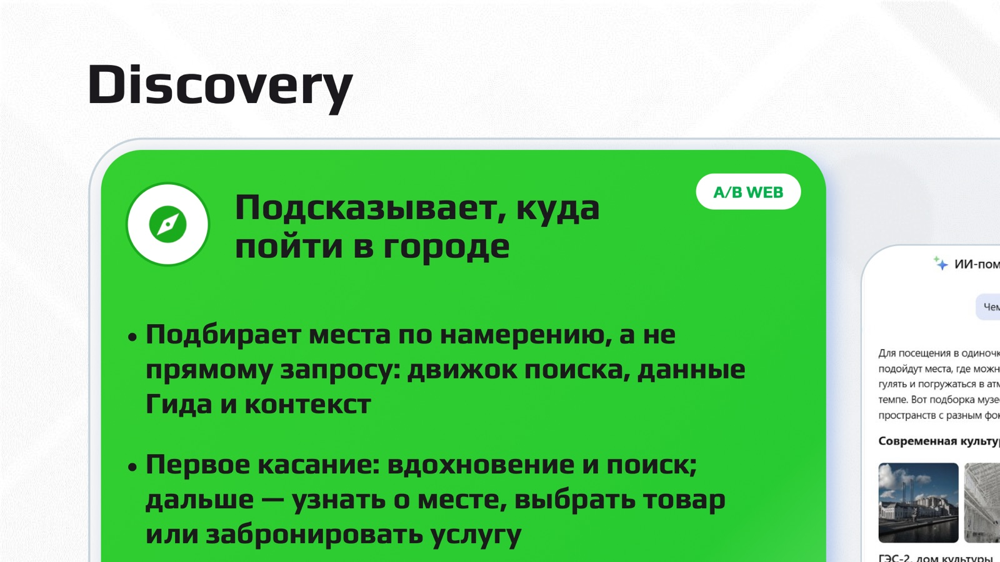
7 · Discovery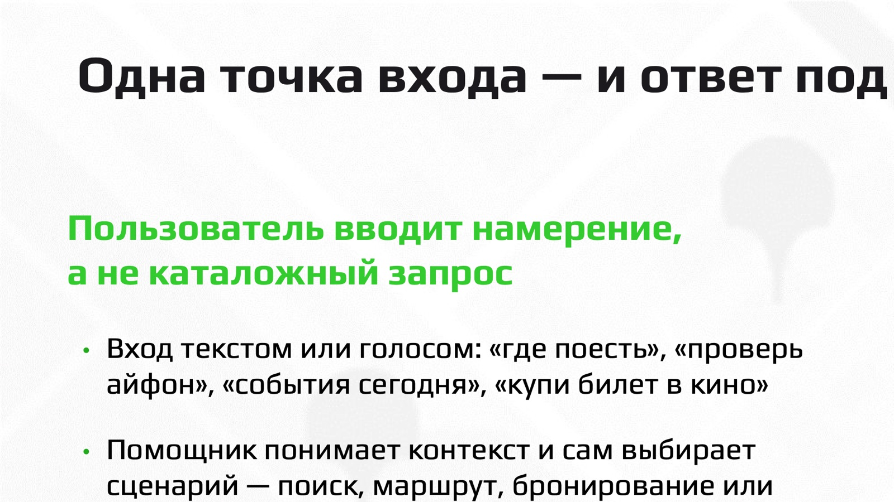
11 · Одна точка входа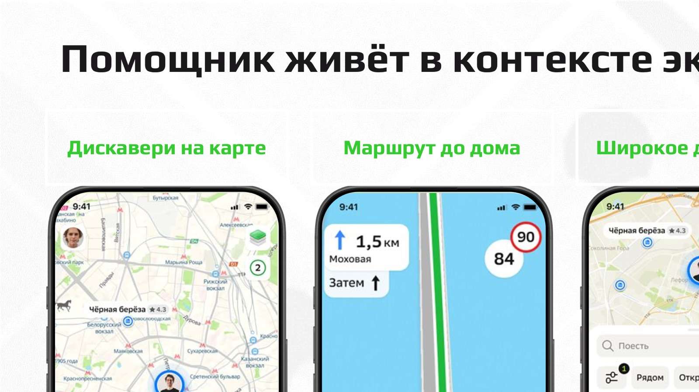
12 · Контекст экрана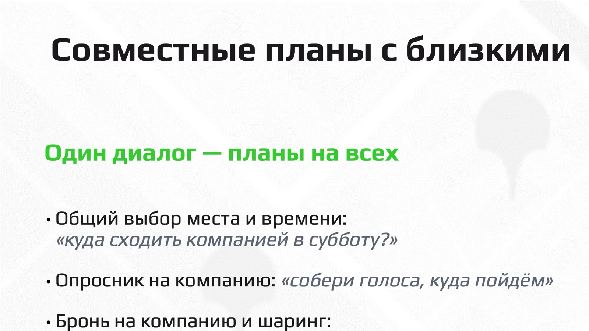
13 · Совместные планы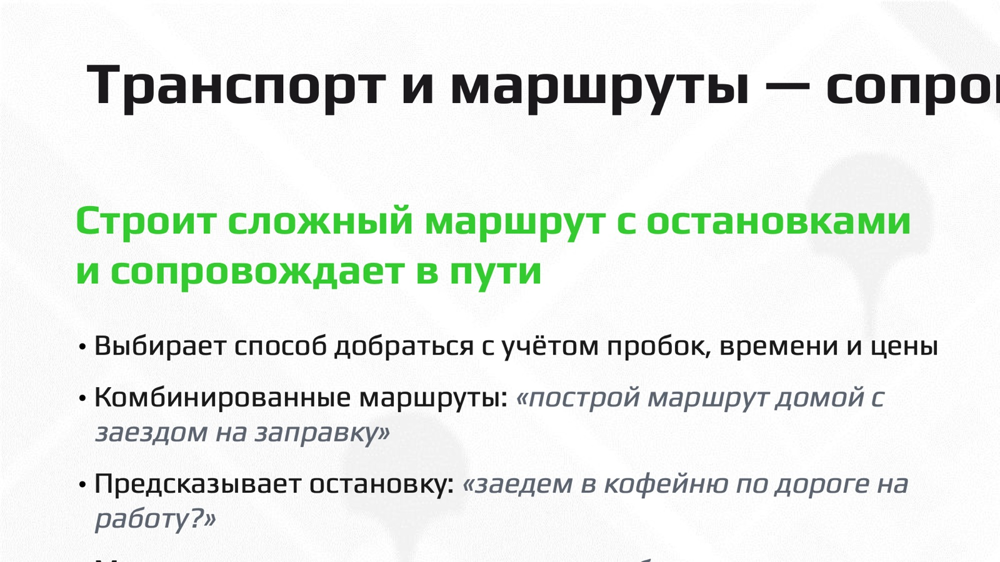
14 · Транспорт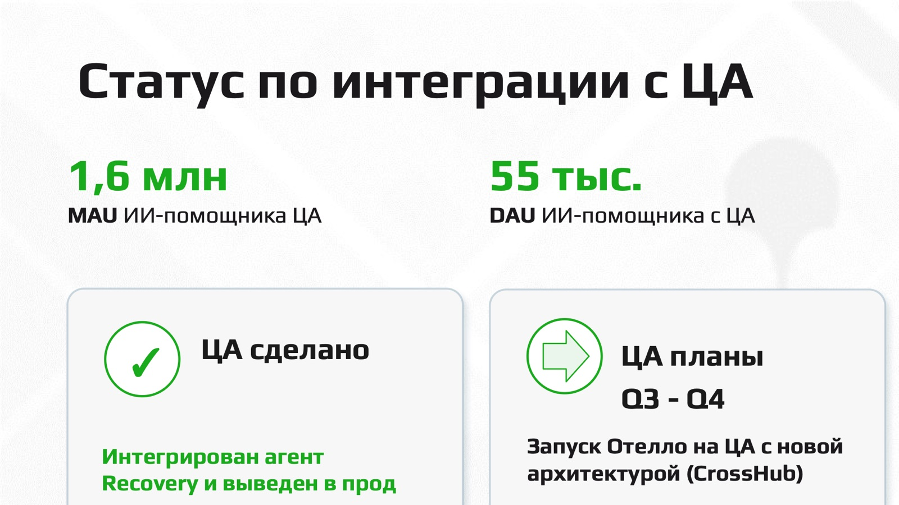
16 · Статус ЦА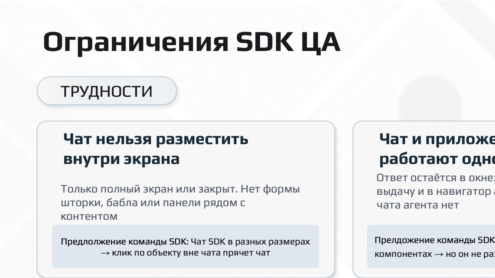
17 · Ограничения SDK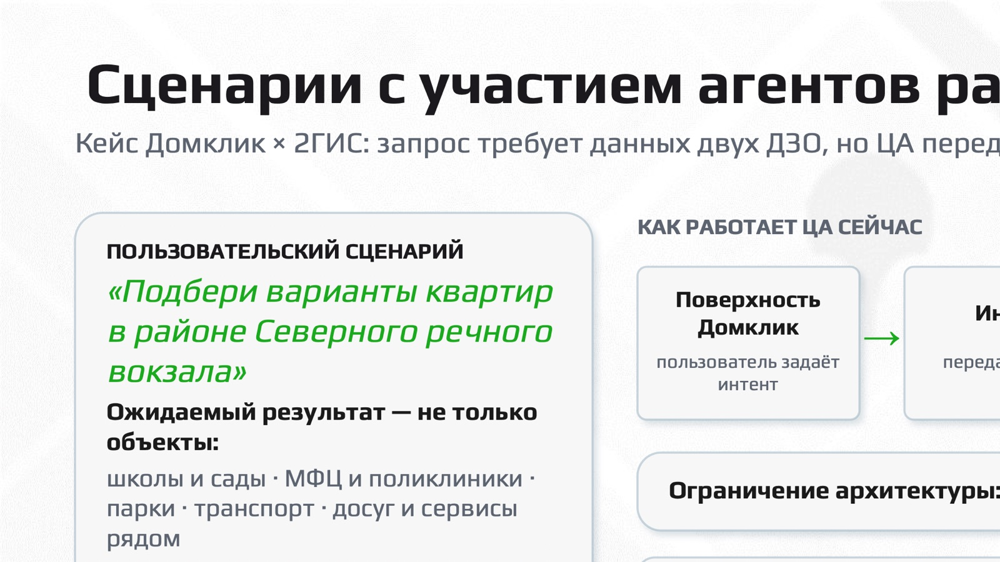
18 · Агенты ДЗО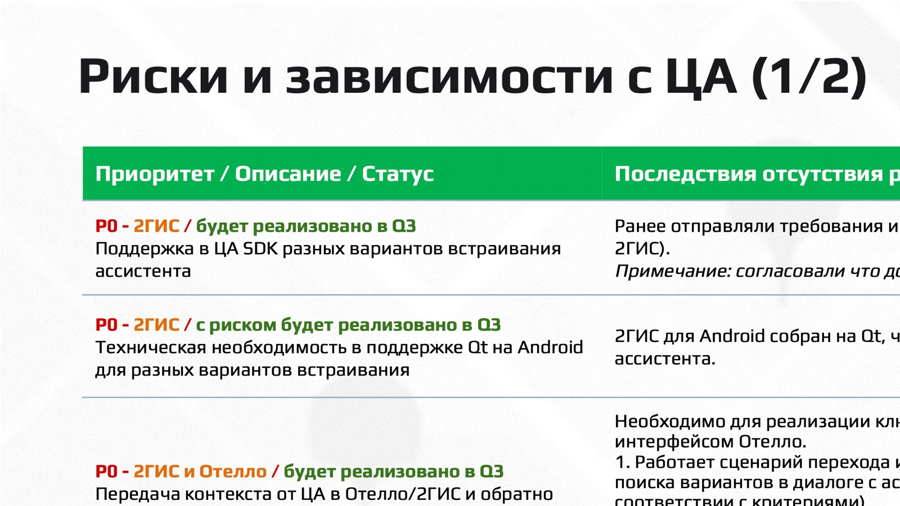
20 · Риски ЦА 1/2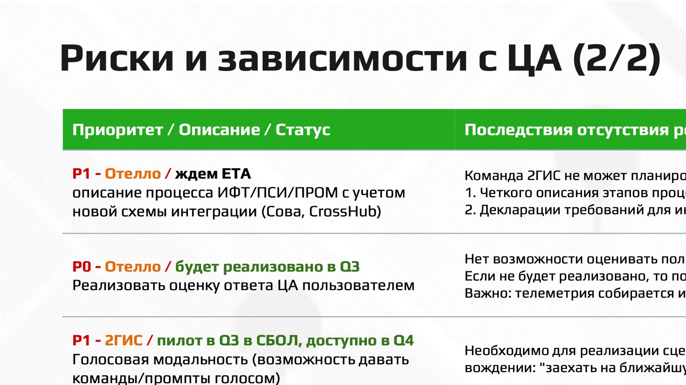
21 · Риски ЦА 2/2